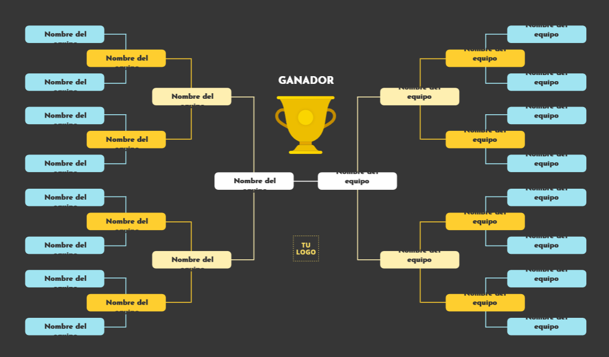
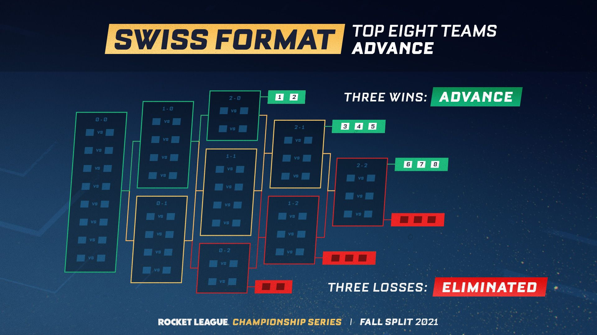
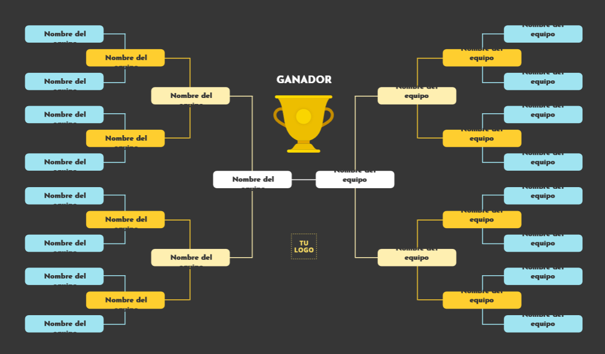
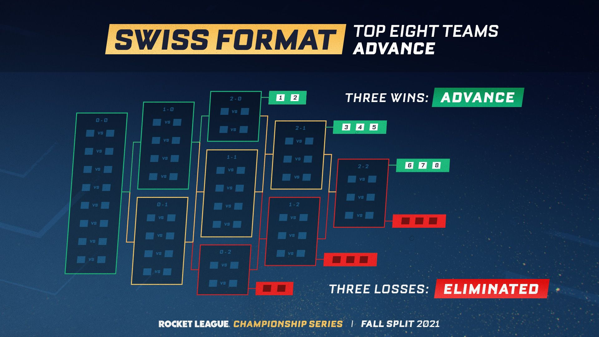

- Liga
El formato liga es el más conocido en todo el mundo.
Poniendo el ejemplo con el Futbol, en la gran mayoría de ligas domésticas se jugarían un total de 38 partidos,
19 en su campo y 19 fuera de casa
- Eliminatoria directa
Por ejemplo es el formato de todos los torneos de Tenis, se empieza directamente en una fase KO en la
que si pierdes quedas eliminado
- Fase de grupos + eliminatoria
Por ejemplo el Mundial de Futbol tiene este formato.
Consta de un pequeño número de partidos en fase de grupos, normalmente 3, seguido de eliminatorias directas.
- Liga + Playoff
Éste es el formato de la NBA y ACB
Se juega una liga completa contra todos los equipos y finalmente los X mejores desenbocan en un playoff
en el serán eliminatorias directas pero al mejor de 3 5 o 7 partidos.
- Suizo
Éste es el formato más usado en el Ajedrez. Primeramente se hace un ranking en base al nivel de cada jugador.
El jugador se enfrentará siempre que sea posible a otro jugador que lleve los mismos puntos que el.
 


